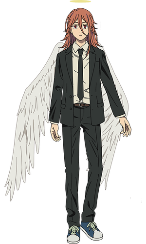

Ангел

Ангел (エンゼル, Enjeru), или Демон Ангела (天てん使しの悪あく魔ま Tenshi no akuma?) — демон, олицетворяющий страх перед ангелами, по совместительству являющийся охотником на демонов из 4-го особого подразделения Токио.
Внешность
Ангел — молодой андрогинный мужчина, носящий в форму Общественной Безопасности. Он имеет волосы до плеч, которые в официальной цветной версии манги и аниме изображены красными, нимб, и пару белых ангельских крыльев за спиной.
Личность
Ангел Демона — уникальный случай, отличающийся от остальных демонов тем, что практически не ненавидит людей. Несмотря на это, он заявляет, что люди должны умирать в агонии и описывает себя как в первую очередь демона, нежели ангела, но позже он утешает умирающую женщину и дарует ей безболезненную смерть.
Из-за своей силы Демон Ангела замкнут и обычно отстранён от остальных своих товарищей-охотников, причём Аки Хаякава — единственный, кто имеет с ним некого рода связь, поскольку он первый известный нам человек, который не побоялся прикоснуться к нему.
Он не любит, когда им командуют, и, кажется, испытывает отвращение к сражениям, предпочитая вместо этого вынести бессознательного врага наружу. Его чрезвычайная ленивость не позволяет ему быть сильным бойцом. Когда его заставили сражаться, он проявил нежелание использовать свои силы и извинился перед всеми людьми, жизни которых использовал для создания оружия.
Демон Ангела пассивен и не имеет воли к жизни: по его словам, он предпочитает смерть работе. Узнав, что Аки осталось жить менее пяти лет, Ангел называет его везунчиком и говорит, что тоже хочет поскорее умереть, ведь «пока ты жив, приходится тратить свои силы, а когда умрёшь, можно и расслабиться». Оказавшись на грани смерти, он просит Аки позволить ему умереть и говорит, что он уже давно был готов к этому.
Ангел неравнодушен к мягкому мороженому, но готов есть всё, включая плоть зомби и труп другого демона.
Сюжет
Предыстория
Последнее воспоминание Демона Ангела предположительно было в прибрежной деревне, где он нашел сообщество людей, которые приняли его и заботились о нём, несмотря на то, что он является демоном.[10] В этом сообществе он предположительно встречался с молодой женщиной, которую он описал как «ту, которую я любил, и ту, которая любила меня».
После этого люди и его предполагаемая девушка отправились на пляж, когда внезапно объявилась Макима, попросив показать его силы демона. Хотя он сначала отказался, она приказала ему использовать их. Затем он проснулся несколькими часами позже, поглотив жизни всех в деревне.
Арка Человека-Катаны
Арка Девочки-Бомбы
Арка Международных Убийц
Арка Демона Огнестрела
В главе 74 он внезапно вспоминает своё прошлое после того, как Макима приказывает Аки заключить контракт. Намереваясь сразиться с Макимой, он использует 10 лет жизненной силы, чтобы создать клинок. Однако она просто произносит слово «Лежать», и Демон Ангела падает на землю. Она становится на колени рядом с ним, приказывая ему отдать ей всё. Находясь под контролем сознания, Демон Ангела соглашается стать собакой Макимы и подчиняться её приказам.
Способности
Как демон, Демон Ангела обладает всеми стандартными способностями демонов. Помимо этого, Демон Ангела обладает уникальной способностью поглощать жизни людей одним лишь прикосновением, что делает его по-настоящему опасным. Демон Ангела — второй по силе агент 4-го подразделения после капитана Кишибэ, но это только если не брать в учёт его лень.
Физические способности
Ангельские крылья: Демон Ангела имеет способность расправить крылья на спине. Эти крылья достаточно прочны, чтобы отражать выстрелы, и их можно использовать в качестве импровизированных щитов, однако пули всё же причиняют ему боль.Неизвестно, может ли он летать, подобно Демону Летучей Мыши.
Сверхъестественные способности
Поглощение лет жизни: Демон Ангела забирает продолжительность жизни через физический контакт. Если контакт будет длится достаточно долго, человек в конечном счёте безболезненно умрёт. После того, как Аки схватил его за руку, Демон Ангела подсчитал, что тот потерял, по меньшей мере, два месяца жизни
Создание оружия из лет жизни: с помощью своего нимба Демон Ангела может превратить накопленную продолжительность жизни в оружие, обладающее сверхъестественными свойствами, такое как катана Аки, которая способна разрезать неосязаемого Демона Призрака. Из-за своих кошмаров о людях, у которых он забрал годы жизни, он не решается часто использовать эту способность.
'С использованием пяти лет' (五ご年ねん使し用よう Gonen Shiyō?): Используя накопленные 5 лет жизни, Демон Ангела может преобразовать с помощью своего нимба меч, мгновенно убивающий жертву без нанесения видимых повреждений.
'С использованием десяти лет' (10年ねん使し用よう Jūnen Shiyō?): Используя накопленные 10 лет жизни, Демон Ангела может преобразовать с помощью своего нимба меч, чьи характеристики неизвестны, потому что Макима сбивает Демона Ангела с ног до того, как он его использует.
'С использованием сотни лет' (100年ねん使し用よう Hyakunen Shiyō?): Используя накопленные 100 лет жизни, Демон Ангела может преобразовать с помощью своего нимба меч. Эта способность используется Макимой против Пауэр во время того, как она контролирует Демона Ангела.
'С использованием тысячи лет' (千せん年ねん使し用よう Sennen Shiyō?): Используя накопленные 1000 лет жизни, Демон Ангела может преобразовать с помощью своего нимба копье. Эта способность используется Макимой против Человека-Бензопилы, когда она контролирует Демона Ангела. Это оружие обладает достаточной мощью, чтобы победить Человека-Бензопилу.
Навыки
Владение копьём: Демон Ангела умело обращается с копьём в бою, без промаха метнув копьё в Резе, стоя на крыше неподалёку.
Владение мечом: Демон Ангела обладает некоторыми навыками обращения с мечом. Одним взмахом меча он убил 5 марионеток Санта Клауса
Разное
Внешний вид Демона Ангела основан на низшем чине ангелов, называемых просто ангелами. Это наиболее часто изображаемые ангелы в классических картинах средневековья и эпохи Возрождения. Другие ангелы низшего чина христианской ангельской иерархии — это Архангелы и Начала.
Возможно, что способность Ангела забирать и использовать в качестве оружия продолжительность жизни может быть связана с тем, что иногда ангелы символизируют или связаны со смертью, либо их видят перед смертью.
Он один из последователей Человека-Бензопилы. Другими последователями были Пауэр, Бим, Галгали, Принци, Серафим, Доминион и Виртус.
В Опросах популярности Демон Ангела занимает следующие места:
6 место в Первом опросе популярности с 13 374 голосами.
7 место во Втором опросе популярности с 27 761 голосами.